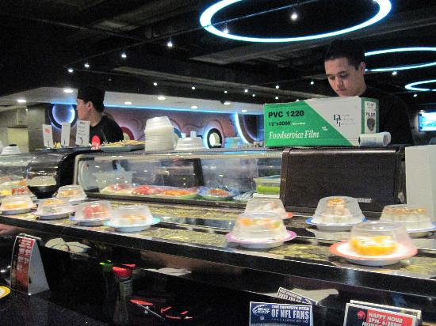

Contact
- River Park Square
- 808 West Main Avenue Suite #105
- Spokane, WA 99201
- (509) 455-3900
- maruspokane@gmail.com
Hours
Monday - Thursday
- Lunch: 11am - 2:30pm
- Dinner: 5pm - 9:30pm
Friday & Saturday
- Open all day 11am - 10pm
Sunday
- Open all day 12pm - 9pm